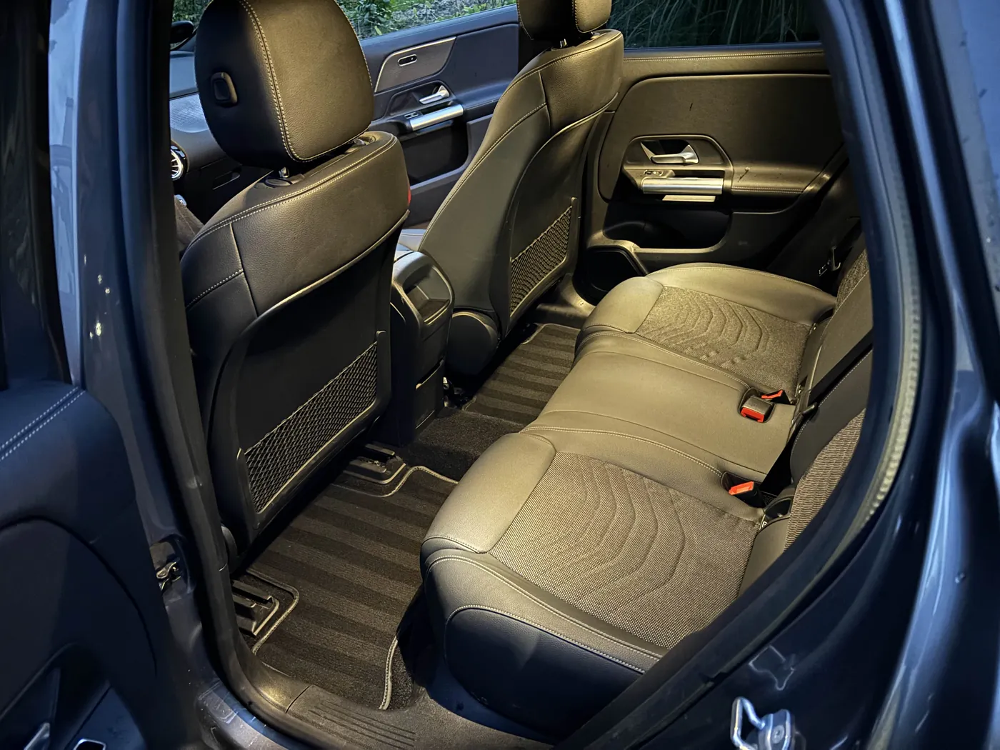
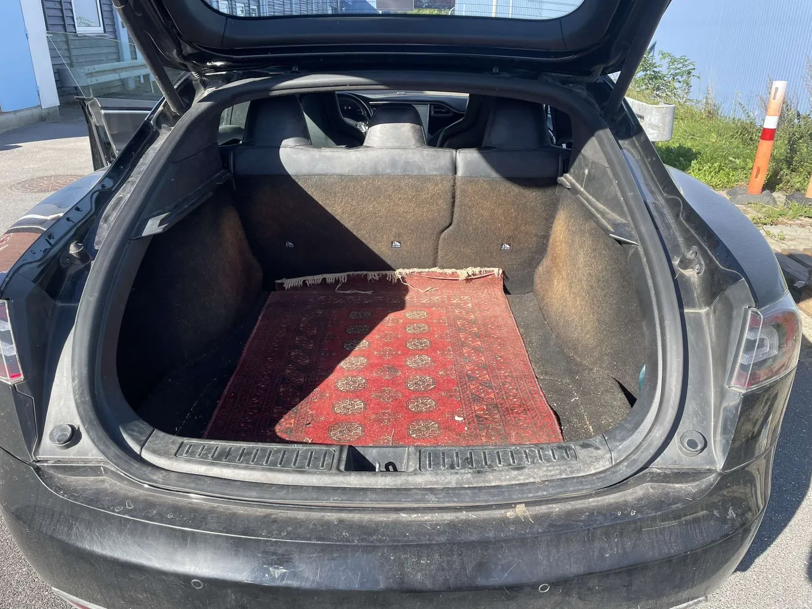
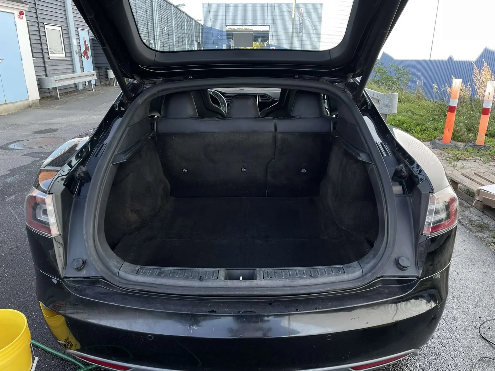

Guide · Af Direkte Detailing · 14. oktober 2026 · 4 min. læsning
Hos os koster en indvendig rengøring af en bil mellem 685 og 1.125 kr., alt efter hvor stor bilen er. En lille bil som en VW Polo koster 685 kr., og en 7-personers koster 1.125 kr. Priserne er inklusive moms, og vi kører ud til dig i Svendborg, på Tåsinge og Thurø uden transporttillæg.
Her er hele prislisten, hvad der er med i prisen, og hvad der kan gøre det dyrere.

Priser efter bilstørrelse
Prisen følger bilens størrelse, fordi der er mere at gøre rent i en 7-personers end i en lille bybil. Har bilen 7 sæder, er den altid 7-personers. Ellers går du efter, hvor stor den er.
| Bilstørrelse | Indvendig | Premium | Eksempler |
|---|---|---|---|
| Lille bil | 685 kr. | 1.250 kr. | VW Polo, Fiat 500, Toyota Aygo, Mini Cooper |
| Mellem bil | 875 kr. | 1.430 kr. | VW Golf, Skoda Octavia, Toyota Corolla, BMW 3-serie |
| Stor bil | 975 kr. | 1.549 kr. | BMW 5-serie, VW Passat stationcar, Tesla Model Y, Skoda Enyaq |
| 7-personers | 1.125 kr. | 1.750 kr. | Alle biler med 7 sæder, fx VW Touran og Mercedes EQV |
Ligger bilen mellem to størrelser, vurderer vi den, når vi kommer. Du får prisen, før vi går i gang, og den bliver aldrig højere, uden at du har sagt ja. Flere bilmodeller står i størrelsesguiden.
Hvad er med i prisen
En indvendig rengøring tager hele kabinen, fra skinnerne under sæderne og op til loftet. Det tager typisk to til tre timer, afhængigt af hvor meget der skal ud af bilen først.
- Grundig støvsugning i alle kroge, også sædeskinnerne
- Afpudsning af instrumentbord, paneler, konsol og dørkort
- Alle vinduer pudset indefra
- Dybdegående rens af måtter og gummishine
- Rens med damprenser
- Rengøring af dørfalserne
Damprenseren er med i prisen. Det er den, der løsner den klæbrige film på rattet og gearvælgeren, som de fleste lægger mærke til bagefter.
Hvad kan gøre det dyrere
Prisen ovenfor er for selve rengøringen. Pletter i sæderne og hundehår kræver noget andet end en støvsuger, og derfor er de tilkøb:
| Sæderens | Trækker snavs og lugt op af stoffet. 160 kr. for forsæderne, 400 kr. for alle fem. | 80 kr. pr. sæde |
|---|---|---|
| Hundehår | Hårene trækkes ud af stoffet med særligt værktøj. Prisen aftales ved ankomst. | 149–399 kr. |
| Læderbehandling | Tilfører fugt, så læderet ikke tørrer ud og revner. Med i Premium. | 125 kr. |
| Plastikpleje | Giver det sorte plast i kabinen farven tilbage. Med i Premium. | 185 kr. |


Har du en hund, der kører med hver dag, er det typisk hundehårene, der fylder mest på regningen. Vi siger prisen, før vi går i gang. Du kan læse mere om hvert tilkøb på siden om tilkøb.
Standard eller Premium?
Premium indvendig koster fra 1.250 kr. for en lille bil, altså 565 kr. mere end Standard. Den går mere i dybden, og læderbehandling og plastikpleje er med.
Standard er nok, når det mest handler om støv, krummer og en kabine, der trænger til at blive frisket op. Premium giver mening, når lædersæderne er begyndt at se tørre ud, eller det sorte plast er blevet gråt af solen. Er du i tvivl, så ring. Vi siger det ærligt, hvis Standard er nok.
Når du sammenligner priser
Indvendig rengøring kan betyde meget forskellige ting fra firma til firma, så det er værd at tjekke et par ting, før man sammenligner tal:
- Er damprens med? Uden den bliver overfladerne tørret af, men ikke renset.
- Er prisen med moms? Erhvervspriser står ofte uden.
- Er der transporttillæg? Hos os er der ikke, inden for Svendborg, Tåsinge og Thurø.
- Hvad koster sæderens og hundehår? Det er dér, prisen typisk stiger.
- Får du prisen, før arbejdet starter? Det gør du hos os, og den ændrer sig ikke uden dit ja.
Sådan foregår det
Vi kommer ud til dig og gør bilen ren, hvor den holder, typisk i indkørslen eller carporten. Du behøver ikke være hjemme imens. Vi skal bare kunne komme til bilen og til vand og strøm, så har vi damprenser, støvsuger og produkter med. Du kan booke online eller ringe på 29 72 96 95 på hverdage mellem 14 og 20.